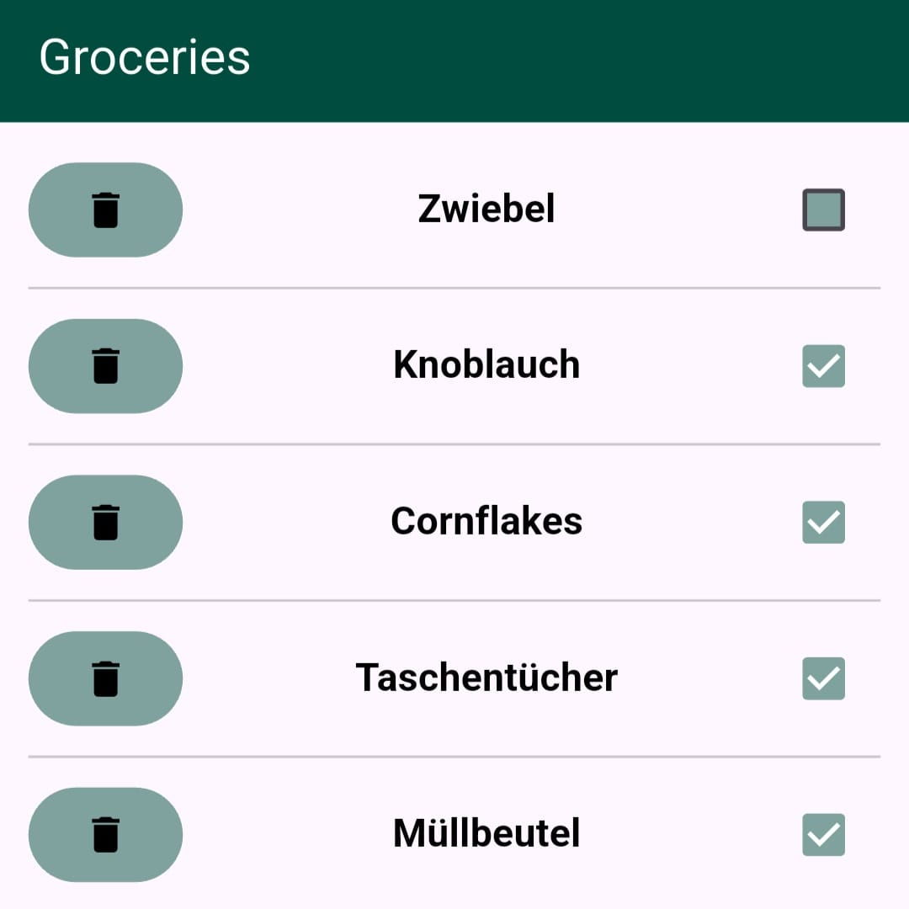

Programming

Shopping App
I am developing this shopping app both as a means to learn Flutter and in order to organize my shopping.
It is not very complex and it is not finished, but it works and I use it regularly.
Check it out on github!
This very Website
I created this very website. I originally used bootstrap for styling and react to display its contents. But I realized I don't need any of that.
Now it is prettier and faster than ever and I learned a lot about CSS in the process.
Check out the code on github!

Image Analogifier
After watching this youtube video I was inspired to create a filter that reduces the dynamic range in fotos and videos. This does not exactly emulate the analog look, but it recreates an aspect of analog photography that I find very pretty.
I used pythons opencv library for the image manipulation and moviepy to apply the same to videos.
Check out the code on github!